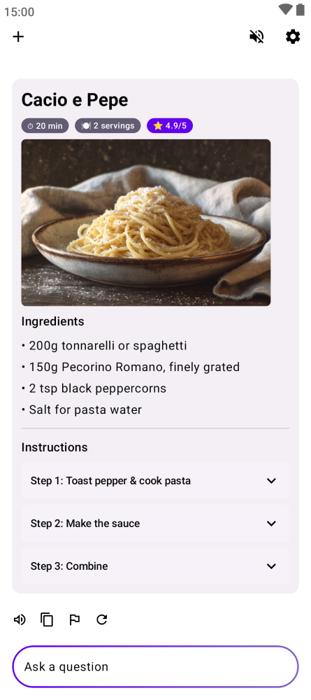

你以为Kai只是个聊天机器人？这5个隐藏功能把它用活了
从回退链自动容灾到设置一键迁移，从图片自动压缩到重生成vs重试的微妙区别——翻遍Kai的设置面板，挖出五个官方没怎么讲但每天都在用的藏货。
用了大半年Kai官网的这款随身AI助手，一直把它当日常工具使——问问题、让它解释代码、偶尔发张截图让它看图。直到某次主力服务抽风它悄无声息切到了另一家，我才意识到这东西藏的东西比我想的多得多。
第一个发现：它比我先知道"我没钱了"
上周连续高强度用了两天，突然弹出一个限流提示。本来以为就是干巴巴的"额度用完了"，结果面板里直接摆了五家服务商的芯片按钮——Groq、Cerebras、Gemini、OpenRouter、Ollama Cloud，点一下直接跳对应平台的密钥申请页，注册、创建密钥、回到设置里粘贴校验，整套流程不到五分钟。
这不是什么高深功能，但藏得真深。限流面板本身就是个隐形的引导系统——它知道免费档用户最容易卡壳的点，直接把解决方案推到脸上。我后来才反应过来，这套逻辑其实是在鼓励用户"从公共档过渡到自付费"，而不是让你硬撞重试键白耗流量。
回退链：你以为在手动切服务，它在后台帮你容灾
这是我最喜欢的隐藏功能。设置里叫回退链，说白了就是"主力挂了自动切备胎"。我平时主力用Gemini，备胎链里按顺序排了Groq和OpenRouter的免费层。有天Gemini响应特别慢，Kai自动切到Groq继续答——回答气泡右下角多了一行小字"由Groq应答"，如果不是我眼神好，根本不会注意到。
藏在哪？设置 → 服务，每家服务右边有个排序图标，拖一拖就能调整优先级。规则很简单：第一家是主力，后面的依次当备胎。主力限流、超时、或者返回错误，直接往下跳。这套完整逻辑和配置说明在Kai文档里有更细的表格版。
实用程度取决于你配了多少家。只配一家等于没这功能；配三家以上，体感接近无限量。我现在主力Gemini + Groq + OpenRouter免费层，三家错开额度消耗，几乎没再碰到真正意义上的"用不了"。
图片附件不只是"发图"，它在帮你省流量
发了几百次截图让Kai看报错，从没注意过它在背后做了什么。文档里写得很直白：原始大小上限50MB，超限自动压缩到15MB以内的JPEG。压缩率够狠，而且是自动的——你拖进去的原图多大不重要，发出去之前它自己处理。
这个细节藏在设置的服务配置里，几乎没人会主动去看。实际效果：一张20MB的PNG截图，发出去可能就400KB左右，省的不只是你的上行流量，也是API那边的token消耗。
还有个冷知识：内置免费档、1min.AI、端侧模型这些纯文本通道，附件按钮直接隐藏，不是你眼花找不到，是应用按模型能力自动判定的。发不出去先检查当前通道，别瞎折腾。

"重试"和"重新生成"真的不是一回事
消息气泡下面那两个小按钮，我以前一直觉得是重复功能。直到某次让Kai生成一段Prompt，它答得四不像，我点了重试——原样重发了一遍，它答了差不多的垃圾。再点重新生成，这次它换了个思路，产出完全不一样。
区别很微妙但很重要：重试是"把我刚才说的话原封不动再发一次"，重新生成是"丢弃你上一轮的回答，从头再想一遍"。模型本身有随机性，但重试不会让它"换个思路"，因为输入完全一样；重新生成才会强制它从头来过。
我现在的习惯：答得不好先重试一次确认不是偶发，再不行就重新生成。两个按钮各有用途，浪费了可惜。
设置导出：换手机不用重新配一遍
我换了次手机，从官方下载装上之后，原本以为要从零配置所有服务密钥和回退链，结果在设置页底部找到个"导出设置"按钮——一个JSON文件，新手机上点"导入"，所有配置原样恢复，连服务排序都没变。
这个功能的门槛很低，但文档里藏得很深。适合所有打算长期用Kai的人，尤其是配了三家以上服务的。不备份的话，卸载重装等于从零开始。
有个坑得提醒你
心跳功能默认活跃时段是早八到晚十，时段外一律跳过。我一开始没注意，周末熬夜用的时候感觉心跳不响了，以为坏了，翻了官方文档才发现是它自己帮我"静音"了。这个默认值在设置 → Agent里可以改，但我建议别动——能让你睡个好觉。
还有个容易踩的：不要把敏感话题留在免费档里聊。虽然免费档是公共资源的正常调度，但限流缓解了也建议保持这个纪律。免费档的定位是"让每个人零门槛开始"，当你开始依赖它，就是时候接上属于自己的那把免费密钥了。
最后
Kai这类AI助手的核心竞争力其实不在模型能力——大家最终接入的都是那几家大模型——而在这些看不见摸不着的细节。回退链、自动压缩、重生成的微妙区别、限流引导面板，这些都是在你不注意的时候帮你省时间省流量的东西。
把它用透，真的能省不少事。顺手说一句，Kai的相关资料我分散同步了几份在不同平台——GitHub上有完整目录，Gitee和GitCode也各有一份，总有人比我更需要这份资料集。